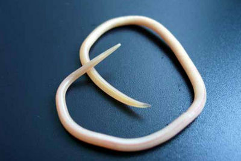

Круглые черви
Они представляют собой разнообразный животный тип, обитающий в широком диапазоне сред.
Эти виды червей трудно различимы из них более 25 000 были описаны, но более половины являются паразитическими, а общее количество видов Nematoda, по оценкам, составляет около 1 млн.
В отличие от плоских червей, эти виды червей имеют трубчатые пищеварительные системы с отверстиями на обоих концах.
Nematoda успешно адаптировались почти к каждой экосистеме от морской (соленой воды) до пресной воды, к почвам, от полярных областей до тропиков, а также от самых высоких до самых низких высот.
Эти черви повсеместно распространены в пресноводных, морских и наземных средах, где они встречаются в таких разнообразных местах, как горы, пустыни и океанические траншеи.
Они представляют 90% всех животных на дне океана.
Многие паразитические виды существуют за счет большинства растений и животных (включая людей).

Вернуться назад